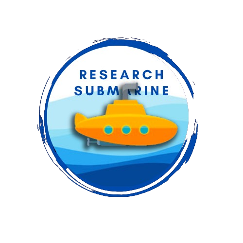

Research Submarine
A research submarine is a highly specialized underwater vessel designed specifically for scientific exploration and study of the ocean depths. These submarines are equipped with advanced technology and instrumentation tailored to gather data, conduct experiments, and observe marine life in their natural habitats. They come in various sizes and configurations, ranging from small remotely operated vehicles (ROVs) to large manned submersibles capable of diving to extreme depths. One of the key features of research submarines is their ability to withstand the immense pressure found at significant depths, ensuring the safety of both the vessel and its occupants. This pressure resistance allows researchers to explore deep-sea environments that are otherwise inaccessible to humans.
Equipped with a variety of scientific instruments, research submarines enable scientists to conduct a wide range of studies, including oceanography, marine biology, geology, archaeology, and environmental monitoring. These instruments include cameras, sonar systems, sensors for measuring temperature, pressure, and water chemistry, as well as sampling tools for collecting sediment and biological specimens. Some research submarines are manned, with a crew of scientists and pilots onboard, while others are remotely operated or autonomous, controlled from the surface. Regardless of their mode of operation, these submarines provide valuable insights into the mysteries of the ocean.